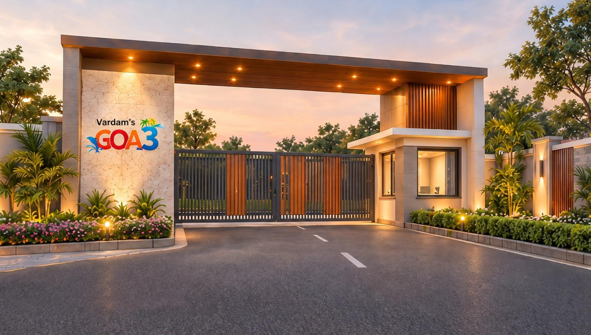

Premium Farmhouse Plots
Well-laid plots within the development, planned for privacy, greenery and easy access — ready for your farmhouse vision.

Farmhouses · Malvan, Konkan
Vardam's GOA3 is an independent farmhouse development in the coastal heartland of Malvan, Konkan — a place of coconut groves, red laterite earth and slow, salt-tinged afternoons.
Here, you can own a premium farmhouse plot and, when you are ready, have your own farmhouse thoughtfully designed and built for you. It is land first, architecture second — and a lifetime of weekends, harvests and family summers after that.
Every enquiry is handled personally. Share your plans with us on WhatsApp, and we will walk you through plots, designs and the way we build.
Well-laid plots within the development, planned for privacy, greenery and easy access — ready for your farmhouse vision.
From foundation to finish, we build your farmhouse on your plot — with civil work, exteriors and interiors handled end to end.
Custom architectural designs shaped around your family, your plot's orientation and the Konkan climate.
A peaceful lifestyle among groves and gardens — the quiet rhythm of the Konkan, close to Malvan's coastline.
Concept illustrations shown are representative. Final 3D renders, floor plans and specifications are shared on enquiry.
The development is laid out so every plot breathes — internal roads, green buffers and orientation planned around the land's natural contours.
Indicative master plan visual · Replaceable with final 3D layout
Tell us what you're imagining — a quiet weekend retreat or a full family estate — and we'll help you find the plot and the plan.